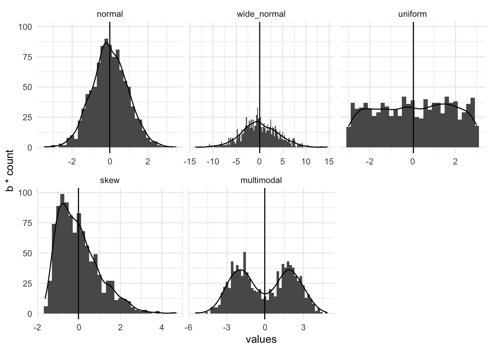
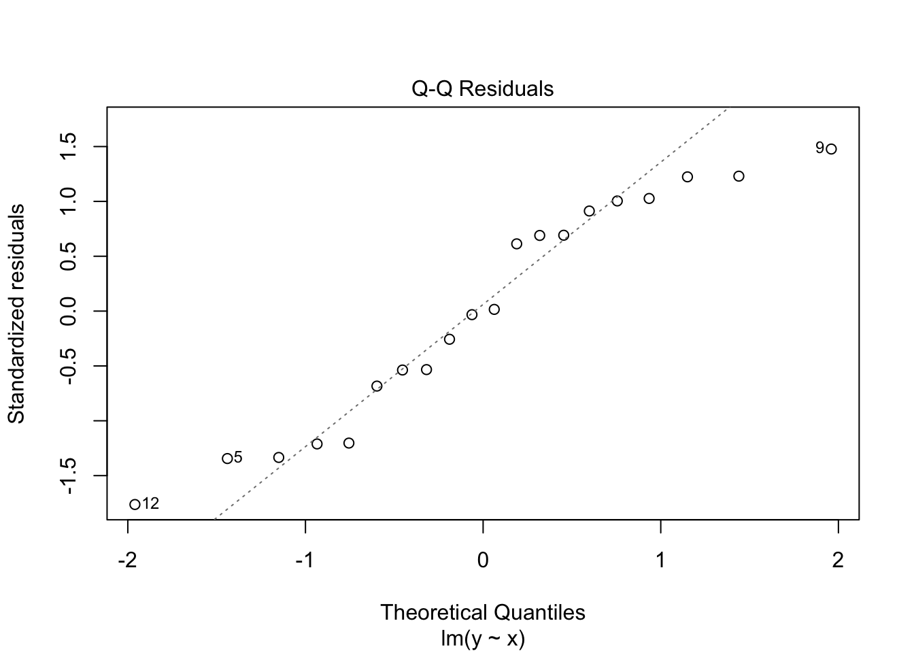

Learn how to tell whether the data you have are suitable for linear models
Keypoints
Data should be normally distributed, but linear models are quite robust to deviation from this
In this section we’ll look at assessing whether a linear model is a good one, from a model fit point of view. If it is a poor fit then the conclusions we’re trying to make are much less likely to be valid and our science will suffer.
7.1 Assessing a linear model
A decent line fit to the data is essential for good statistical analysis with a linear model. The quality of fit to a linear model can be used to assess whether the data are appropriate for a particular test, even if we intend to just use the test. If we don’t get a reliable fit we don’t get a result we can be confident in from either the linear model and crucially, neither would we if we did the corresponding tests, like the \(t\)-test and ANOVA. Let’s examine some model fits.
7.1.1 The terror of normality
Scientists that have done at least a little statistics often seem concerned that their data must be normally distributed for an analysis to be valid. This may stem from reviewers who will ask whether ‘the test is appropriate for the sort of data analysed’ or related ‘whether the distribution of the data is normal’. These questions are sometimes legitimate, thankfully they are easy to answer and you should ask them of your data when you build your model because the answers will help you understand the goodness of your model. The good news is that you don’t need to worry about your data being a super typical normal distribution, instead you can check whether the data are normal enough. All the tests and linear models will be very robust and even tend toward conservatism in their results if the data are all of the below:
represented well by their mean
have a normal pattern in the residual
show a reasonable correlation in a qq-plot
7.1.2 Checking whether the mean is a good summary
The first thing to check, whether you intend to do a simple \(t\)-test or a multi-way ANOVA is whether the mean is actually a good summary of the whole of the data. If you have multiple variables you’ll need to check the means of each one. A mean is a good summary of a set of data if it sits nicely in the middle and there are no other peaks or skew in a histogram of that data. This is easier to think about if we draw some pictures. In this set of panels of histograms with density plots the mean (the vertical line) is an increasingly poor summary of the data as we go from left to right along the panels.
library(itssl)its_is_the_mean_a_good_summary_time(1000, type ="hist")
Warning: The dot-dot notation (`..count..`) was deprecated in ggplot2 3.4.0.
ℹ Please use `after_stat(count)` instead.
ℹ The deprecated feature was likely used in the itssl package.
Please report the issue to the authors.

The first one, a normal distribution is summarised well by the mean. The second a normal distribution with a very wide standard deviation is less good. They have the mean at the peak, with the rest of the data falling evenly away. The third, the uniform distribution (in which all outcomes are equally likely) has no peak because the central outcome isn’t more likely than the others though the mean is in the middle so it still has some value. The final two are badly summarised by the mean, the skew-normal distribution has the mean away from the peak because of the long tail and the multimodal has more than one peak. The take-home here is that the model fit and assumptions are increasingly poor as we move along, not that the tests and models become completely useless. In practice our conclusions must become more circumspect and a single test is less convincing, the final two are really quite likely to be difficult to conclude from using normal based linear models..
For you to do
Use the its_is_the_mean_a_good_summary_time() to examine the effect of sample size on how these data look and view them in different plot type
7.1.3 Spotting a good fit to the data
Another thing you can do to assess your linear model is check out the residuals. Remember we described these as the distance between the actual data and the fitted line. The distribution of these tells us a lot. Let’s think about these two data sets,
close_fit <-its_random_xy_time(20)far_fit <-data.frame( x <-runif(20, 5, 15), y <-runif(20, 5, 15))its_plot_xy_time(close_fit, line =TRUE)its_plot_xy_time(far_fit, line =TRUE)
We can see the first has a fairly good slope and the points are all relatively close to the line, while in the second the slope is weak because the points are further away. The lm() function calculates the residuals and we can plot them.
close_fit_model <-lm(y ~ x, data = close_fit)far_fit_model <-lm(y ~ x, data = far_fit)plot(close_fit_model, which =1)plot(far_fit_model, which =1)
Here we see the \(x\)-axis value is the value from the model, so the \(x\)-axis value of a data point, the \(y\)-axis value is the residual itself the distance between the line \(y\) value and the observed \(y\) value. The first plot shows a nice even scatter and flat line and a range of -2 to 2. The second shows a more erratic scatter with the red line having a little wobble and a much higher range, from - 6 to 4.
Together they show us that the second model doesn’t fit as the data as closely as the first, the increased residual size and the more wobbly line mean it isn’t as good. Its still not useless though, a wobbly line is still sometimes useable, we would be more worried if we had these data, which have some hidden structure in. Here’s a non-linear data set and its residual plot
non_linear_data <- tibble::tibble(x =1:20,y = (x ^2 ) +runif(20, 3, 60))its_plot_xy_time(non_linear_data, line =TRUE)non_linear_model <-lm(y ~ x, data = non_linear_data)plot(non_linear_model, which =1)
Initially, the line seems to fit the data quite well, but the giveaway is in the residual plot, which has quite the pattern!! The data are actually a \(y = x^2\) relationship with some noise added. By viewing the \(x\) vs \(y\) plot we don’t easily see that relationship, but the residuals very definitely show that the linear model doesn’t fit the data well, the structure in the residual plot indicates that the model is failing to capture some part of our data. As you might imagine, linear models (and related tests) performed with non-linear data will not give good results.
7.1.4 Checking qq-plots for a normal distribution
The qq-plot tests the question of whether data are normally distributed directly. Here the \(x\) values are basically random numbers drawn from a normal distribution with mean and standard deviation the same as the model data and the \(y\) values are the real data. This is easy to do with ggplot()
These often deviate at the ends of the scatter plot, but the centre parts should fall along the line with random deviation. Here, with these particular data sets, the close_fit and far_fit appear to be matching marginally better overall than the non_linear which is veering around the line quite a lot.
and again, we can also do this with the residual data which should also be normally distributed, here the lm() function does a lot of the work for us.
plot(close_fit_model, which =2)plot(far_fit_model, which =2)plot(non_linear_model, which =2)

:::{.callout-note} ## Roundup * Linear models work best when the residuals are normally distributed, but linear models are somewhat robust to deviation from this ```